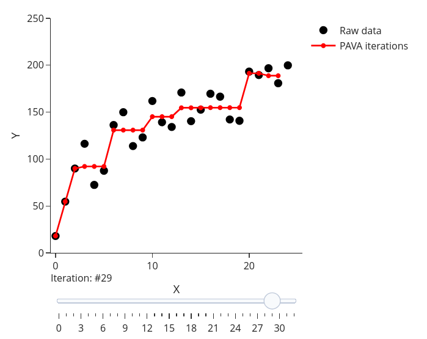

{{
% thin space, limits underneath in displays % thin space, limits underneath in displays }}
Note: This blog is mainly inspired by the post by Pedregosa (2013) on Isotonic regression, a version of the PAVA algorithm provided by Best and Chakravarti (1990).
Introduction & formulation
Isotonic regression is a technique used to fit a non-decreasing function to a set of data points. We can think of isotonic regression as a generalization of linear regression where the function is constrained to be non-decreasing.
More formally suppose that one collects n sample points y_1,\dots, y_n and has weights w_1, \dots, w_n associated with each data point.
Note: when no a priori weights are given, we can set w_i = 1 for all i \in \llbracket 1, n \rrbracket.
Then, the isotonic regression problem can be formulated as follows: \begin{align} \min_{x \in \mathbb{R}^n} \frac{1}{2} & \sum_{i=1}^{n} w_i (x_i - y_i)^2 \\ \text{s.t.} & \quad x_1 \leq x_2 \leq \ldots \leq x_n \nonumber \end{align} \tag{1}
Visualization
Below you’ll find a visualization, on a synthetic dataset, of the most common algorithm, the Pools Adjacent Violators Algorithm (PAVA) to solve isotonic regression algorithm. The top plot shows the evolution of the PAVA algorithm, while the bottom plot shows the primal and dual objectives until convergence. Note that the essence of the algorithm is simple: it Pools Adjacent Violators, i.e., it replaces adjacent points that are not in increasing order by averaging.
Applications
Isotonic regression is used in a variety of applications, including:
Monotonicity constraints: In many applications, it is important to ensure that the relationship between two variables is monotonic. This is the case in physics or biology for instance.
Calibration for machine learning models: Isotonic regression can be used to calibrate the output of a machine learning model to ensure that it is well-calibrated. It is common for binary classifiers to output probabilities that are not well-calibrated, and isotonic regression can be used to correct this. You will find a some details and examples in the scikit-learn documentation.
Sparse regression: isotonic regression has some links with the Slope penalty Bogdan et al. (2015), a generalization of the Lasso penalty. The Slope estimator has been introduced to improve False Discovery Rate control in high-dimensional settings. It is a weighted ordered \ell_1 penalty, whose proximity operator can be computing thanks to the PAVA algorithm Zeng and Figueiredo (2014) (using Moreau’s identity). I became aware of this while working on Bellec, Salmon, and Vaiter (2017) : we were using that property to compute efficiently the GSlope estimator (and to control duality gap in this context).
Optimization, duality, etc.
The formulation of the isotonic regression problem given in Equation 1 is a quadratic program (QP) with linear constraints. Using a matrix notation, introducing the matrix A = \begin{pmatrix} 1 & -1 & & & \\ & 1 & -1 & & \\ & & \ddots & \ddots & \\ & & & 1 & -1\end{pmatrix} = \begin{pmatrix} a_1^\top \\ \vdots \\ a_{n-1}^\top \end{pmatrix} \in \mathbb{R}^{n-1 \times n}\enspace, the isotonic regression problem can be formulated as follows: \begin{align} \min_{x \in \mathbb{R}^n} \frac{1}{2} & \sum_{i=1}^{n} w_i (x_i - y_i)^2 \\ \text{s.t.} & \quad Ax \leq 0 \nonumber \end{align} \tag{2}
In what follows we will write W=\mathop{\mathrm{diag}}(w_1,\dots,w_n), assuming that w_i > 0 for all i \in \llbracket 1, n \rrbracket, so W^{-1}= \mathop{\mathrm{diag}}(1/w_1,\dots,1/w_n). Hence, we can rewrite the isotonic regression problem as
\begin{align} \min_{x \in \mathbb{R}^n} \frac{1}{2} & (x-y)^\top W (x-y) \\ \text{s.t.} & \quad Ax \leq 0 \enspace. \end{align} \tag{3}
Hence, the isotonic regression problem can be formulated as a convex quadratic program with linear constraints.
Notation
The set of isotonic vectors \mathcal{K} = \left\{ x \in \mathbb{R}^n : Ax \leq 0 \right\} is a cone (stable by positive scalar multiplication). We remind also that the polar cone of \mathcal{K} is \mathcal{K}^\circ= \left\{v \in \mathbb{R}^n : \langle v, x \rangle \leq 0 \text{ for all } x \in \mathcal{K}\right\}.
For any set S \subset \llbracket 1, n\rrbracket, the weighted average of y_i over the indices in i \in S reads: \bar{y}_S \triangleq \frac{\sum_{i \in S} w_i y_i}{\sum_{i' \in S} w_{'i'}} \enspace.
Lemma 1 (Polar cone of the isotonic cone) The polar cone of \mathcal{K} is \mathcal{K}^\circ =\left\{ \sum_{i=1}^{n-1} \alpha_i a_i, \text{ for } \alpha_1 \geq 0, \dots, \alpha_{n-1} \geq 0 \right\} = A^\top \mathbb{R}_+^{n-1}\enspace.
Proof. Let x \in \mathcal{K} and v = \sum_{i=1}^{n-1} \alpha_i a_i with \alpha_1 \geq 0, \dots, \alpha_{n-1} \geq 0. Then, note that A x \leq 0 is equivalent to \langle a_i, x \rangle \leq 0 for all i \in \llbracket 1, n-1 \rrbracket. Hence, we have \begin{align*} \langle v, x \rangle & = \sum_{i=1}^{n-1} \alpha_i \langle a_i, x \rangle\\ & \leq 0 \enspace. \end{align*} So \left\{ \sum_{i=1}^{n-1} \alpha_i a_i, \text{ with } \alpha_1 \geq 0, \dots, \alpha_{n-1} \geq 0 \right\} \subset \mathcal{K}^\circ.
For the converse, let v \in \mathcal{K}^\circ. One can check that (a_i)_{i=1,\dots,n-1} are linearly independant, so adding the vector \mathbf{1}_n=(1,\dots,1)^\top/n create a basis of \mathbb{R}^n.
Hence one can write v= \alpha_n \mathbf{1}_n + \sum_{i=1}^{n-1} \alpha_i a_i. Now choosing x=\mathbf{1}_n \in \mathcal{K} yields \langle v, \mathbf{1}_n \rangle = \alpha_n \leq 0. Choosing x = - \mathbf{1}_n \in \mathcal{K} yields \langle v, - \mathbf{1}_n \rangle = - \alpha_n \leq 0. Hence, \alpha_n = 0.
Now, for all i \in \llbracket 1, n-1 \rrbracket, choosing x = \sum_{k=i}^n e_i for i \in \llbracket 2,n\rrbracket yields \langle v, x \rangle = -\alpha_{i}\leq 0. Hence, for all $ i, n-1 $, we have \alpha_i \geq 0, so \mathcal{K}^\circ \subset \left\{ \sum_{i=1}^{n-1} \alpha_i a_i, \text{ with } \alpha_1 \geq 0, \dots, \alpha_{n-1} \geq 0 \right\} and the lemma is proved.
Conic duality / Fenchel transform
Here we remind the definition of the Fenchel transform of a function f defined on \mathbb{R}^n: f^*(v) = \sup_{x \in \mathbb{R}^n} \left\{ \langle v, x \rangle - f(x) \right\}\enspace.
We also write \iota_{\mathcal{K}} the indicator function of the set \mathcal{K}, that is \iota_{\mathcal{K}}(x) = 0 if x \in \mathcal{K} and +\infty otherwise.
Lemma 2 (Fenchel transform of indicator of a cone) The Fenchel transform of the indicator function of a convex cone \mathcal{K} is \iota_{\mathcal{K}}^*(v) = \iota_{\mathcal{K}^\circ}(v)\enspace, where \iota_{\mathcal{K}^\circ} is the indicator function of the set \mathcal{K}^\circ.
Dual problem
Let us now derive the dual problem of the isotonic regression problem given in Equation 2.
Theorem 1 (Dual problem of isotonic regression>) The dual problem of the isotonic regression problem given in Equation 2 is \begin{align*} \max_{\alpha \in \mathbb{R}_+^{n-1}} & \left[ - \frac{1}{2} (A^\top \alpha-W y)^\top W^{-1} (A^\top \alpha-W y) + \frac{1}{2} y^\top W y \right] \enspace. \end{align*}
Proof. With such ingredient we can write the isotonic regression problem as: \begin{align} \min_{x \in \mathbb{R}^n} \frac{1}{2} (y-x)^\top W (y-x) + \iota_{\mathcal{K}}(x) \enspace. \end{align} \tag{4} We can now rewrite the formulation as
\begin{align*} \min_{x \in \mathbb{R}^n} & \frac{1}{2} z^\top W z + \iota_{\mathcal{K}}(x)\\ \text{s.t.} & \quad z = y - x \enspace. \end{align*} We can now introduce the Lagrangian of the problem: \begin{align*} \mathcal{L}(x, z, \lambda) & = \frac{1}{2} z^\top W z + \iota_{\mathcal{K}}(x) + \lambda^\top (y - z - x)\\ & = \frac{1}{2} z^\top W z + \iota_{\mathcal{K}}(x) + \lambda^\top y - \lambda^\top z - \lambda^\top x \enspace. \end{align*} Assuming strong duality holds, we can write the dual problem as \begin{align*} \min_{x \in \mathbb{R}^n, z \in \mathbb{R}^n} \max_{\lambda \in \mathbb{R}^n} ~ \mathcal{L}(x, z, \lambda) = \max_{\lambda \in \mathbb{R}^n} \min_{x \in \mathbb{R}^n, z \in \mathbb{R}^n} & \mathcal{L}(x, z, \lambda) \enspace. \end{align*} Now, one can check that the dual problem is equivalent to
\max_{\lambda \in \mathbb{R}^n} \min_{x \in \mathbb{R}^n, z \in \mathbb{R}^n} \left\{ \frac{1}{2} z^\top W z + \iota_{\mathcal{K}}(x) + \lambda^\top y - \lambda^\top z - \lambda^\top x \right\} \enspace. Separating the terms in x and z yields \max_{\lambda \in \mathbb{R}^n} \left[ \min_{x \in \mathbb{R}^n} \left\{ \iota_{\mathcal{K}}(x) - \lambda^\top x + \lambda^\top y \right\} + \min_{z \in \mathbb{R}^n} \left\{ \frac{1}{2} z^\top W z - \lambda^\top z \right\} \right] \enspace. The second term is a simple quadratic problem with a unique solution given by z = W^{-1} \lambda, hence this can be rewritten as \left[ - \frac{1}{2} \lambda^\top W^{-1} \lambda \right] \enspace. The first term is linked to the Fenchel transform of the indicator function of the cone \mathcal{K}, and reads \left[ - \iota_{\mathcal{K}^\circ}(\lambda) + \lambda^\top y = - \iota_{\mathcal{K}^\circ}(\lambda) + \lambda^\top W^{-1} W y \right] \enspace.
Hence the dual problem reads: \begin{align*} \max_{\lambda \in \mathbb{R}^n} & \left[ - \iota_{\mathcal{K}^\circ}(\lambda) + \lambda^\top y - \frac{1}{2} \lambda^\top W^{-1} \lambda \right] \enspace, \end{align*} the later can be rewritten as
\begin{align*} \max_{\lambda \in \mathcal{K}^{\circ}} & \left[ - \frac{1}{2} (\lambda-W y)^\top W^{-1} (\lambda-W y) + \frac{1}{2} y^\top W y \right] \enspace. \end{align*} Eventually, using the formulation of \mathcal{K}^{\circ} given in Lemma 1, the dual problem can be rewritten as \begin{align*} \max_{\alpha \in \mathbb{R}_+^{n-1}} & \left[ - \frac{1}{2} (A^\top \alpha-W y)^\top W^{-1} (A^\top \alpha-W y) + \frac{1}{2} y^\top W y \right] \enspace, \end{align*} which is the targeted formulation.
Karush-Kuhn-Tucker (KKT) conditions
The KKT conditions for the isotonic regression problem are given by
Theorem 2 (KKT conditions for isotonic regression) Let x^{\star} \in \mathcal{K} and \alpha^{\star} \in \mathbb{R}_+^{n-1} be primal and dual optimal solutions, then the KKT conditions for the isotonic regression problem reads \begin{align*} W (x^{\star}-y) + A^\top \alpha^{\star} & = 0 & ~ (\textbf{stationarity})\\ \langle \alpha^{\star} , A x^{\star} \rangle & = 0 & ~ (\textbf{complementary slackness})\\ \alpha^{\star} & \geq 0 & ~ (\textbf{dual feasibility})\\ A x^{\star} & \leq 0 & ~ (\textbf{primal feasibility}) \end{align*}
Proof. See (Boyd and Vandenberghe 2004, sec. 5.5.3)
In this convex setting (a primal strictly feasible point exists, say x=(1,\dots,n)^\top, so the Slater condition holds), the KKT conditions are necessary and sufficient for optimality.
Stationarity can be rephrased as:
\begin{align*} w_1 (x^{\star}_1- y_1) + \alpha^{\star}_1 & = 0 \\ w_i (x^{\star}_i- y_i) + \alpha^{\star}_{i} - \alpha^{\star}_{i-1} & = 0, \quad \text{for all } i \in \llbracket 2, n-1 \rrbracket\\ w_n (x^{\star}_n - y_n) - \alpha^{\star}_{n-1} & = 0 \enspace. \end{align*} With the convention \alpha_0^{\star} = \alpha_n^{\star} = 0, this reduces to \begin{align*} w_i (x^{\star}_i - y_i) + \alpha^{\star}_{i} - \alpha^{\star}_{i-1} & = 0, \quad \text{for all } i \in \llbracket 1, n \rrbracket\\ \end{align*} \tag{5}
Complementarity slackness can also be rephrased: \begin{align*} & \alpha_i^{\star} (A x^{\star})_i = 0 \quad \text{for all } i \in \llbracket 1, n-1 \rrbracket \\ \iff & \alpha_i^{\star} (x^{\star}_i-x^{\star}_{i+1}) = 0 \quad \text{for all } i \in \llbracket 1, n-1 \rrbracket \enspace. \end{align*}
A simple consequence of the complementarity slackness is as follows: if \alpha_i^{\star} > 0 for some i \in \llbracket 1, n-1 \rrbracket, then x^{\star}_i = x^{\star}_{i+1}. Hence, the set of (n-1) constraints can be partitioned into contiguous blocks where x^\star has constant value. Each block B can be written as B = \llbracket \underline{b}, \overline{b} \rrbracket for some \underline{b} \leq \overline{b} and x^{\star}_{\underline{b}} = x^{\star}_{\underline{b}+1} = \ldots = x^{\star}_{\overline{b}}. When needed we use the convention x^{\star}_{0}=0 and x^{\star}_{n+1}=n+1. and x^{\star}_{n+1}=0. Then, note that by definition of a block, x^{\star}_{\underline{b}-1}<x^{\star}_{\underline{b}} and x^{\star}_{\overline{b}}<x^{\star}_{\overline{b}+1}, and by complementarity \alpha^{\star}_{\underline{b}-1} = \alpha^{\star}_{\overline{b}+1} = 0.
Summing over the elements of B in Equation 5 yields (telescopic sum): \begin{align*} \sum_{i \in B }w_i (x^{\star}_i - y_i) + \alpha_{\overline{b}+1}^{\star} - \alpha_{\underline{b}-1}^{\star} & = 0 \enspace. \end{align*} Hence, noticing that the x_i^{\star} in block B are all equal, we have that:
\begin{align*} x^{\star}_{\underline{b}} = \ldots = x^{\star}_{\overline{b}} = \bar{y}_B \big(= \bar{y}_{\llbracket \underline{b}, \overline{b} \rrbracket} \big)\enspace. \end{align*}
Now, from the values of x^{\star}_{\underline{b}} = \ldots = x^{\star}_{\overline{b}} on the block B, one can infer (by recursion) the \alpha_i’s for i\in B.
Lemma 3 (Expression of the dual variables) Let B =\llbracket \underline{b}, \overline{b} \rrbracket be partitionning block for x^\star (into constants pieces). For any i \in B:
\begin{align*} \alpha^{\star}_{i} & = \Big(\sum_{j \in B \cap \llbracket 1, i \rrbracket} w_j \Big)\left(\bar{y}_{B \cap \llbracket 1, i+1 \rrbracket} - \bar{y}_{B}\right) \enspace. \end{align*}
Proof. The proof is a simple induction on the element of block B. For i=\underline{b} then Equation 5 leads to \alpha^{\star}_{\underline{b}} = w_{\underline{b}} (\bar{y}_{\underline{b}} - x^{\star}_{\underline{b}}) = \Big(\sum_{j \in B \cap \llbracket 1, i \rrbracket} w_j \Big)\left(\bar{y}_{B \cap \llbracket 1, i \rrbracket} - \bar{y}_{B} \right). Now by induction assume the result for i\in B, \alpha^{\star}_{i} = \Big(\sum_{j \in B \cap \llbracket 1, i \rrbracket} w_j \Big)\left(\bar{y}_{B \cap \llbracket 1, i \rrbracket} - \bar{y}_{B}\right). Using Equation 5 for i+1 \in B yields
\begin{align*} \alpha^{\star}_{i+1} & = w_{i+1} (y_{i+1} - x^{\star}_{i+1}) + \alpha^{\star}_i\\ & = w_{i+1} (y_{i+1} - \overline{y}_{B}) + \alpha^{\star}_i\\ & = w_{i+1} (y_{i+1} - \overline{y}_{B}) + \Big(\sum_{j \in B \cap \llbracket 1, i \rrbracket} w_j \Big)\left(\bar{y}_{B \cap \llbracket 1, i \rrbracket} -\bar{y}_{B}\right)\\ & = \Big(\sum_{j \in B \cap \llbracket 1, i + 1 \rrbracket} w_j \Big)\left(\bar{y}_{B \cap \llbracket 1, i+1 \rrbracket} - \bar{y}_{B}\right) \enspace, \end{align*} hence the result.
Algorithm
The intuition behind the PAVA algorithm is to merge adjacent blocks of constant values in the primal vector, as the targeted solution is simply the average of the observe signal over each block. Hence, the algorithm aims at creating the blocks of constant values in the primal vector. The dual variables can be inferred from the solution from the previous lemma.
Pseudo-code and Python implementation
\begin{algorithm} \caption{PAVA} \begin{algorithmic} \REQUIRE $y \in\mathbb{R}^n, w \in \mathbb{R}^n_{+}$ \STATE $r \leftarrow y$ \STATE $W \leftarrow y$ \STATE $J = [\{1\},\dots, \{n\}]$ \COMMENT{lists of blocks} \STATE $i=1$ (index of list start at 0 here) \WHILE{$i<n$} \IF{$r_i < r_{i-1}$} \COMMENT{Find adjacent violators and merge groups} \STATE $r_i \leftarrow \frac{W_i r_i + W_{i-1} r_{i-1}}{W_i + W_{i-1}}$ \STATE $W_i \leftarrow W_i + W_{i-1}$ \STATE $J_i \leftarrow J_i \cup J_{i-1}$ \STATE Remove $r_{i-1}$, $W_{i-1}$ and $J_{i-1}$ from the lists \IF{$i > 1$} \STATE{$i\leftarrow i-1$} \ENDIF \ELSE \STATE{$i \leftarrow i + 1$} \ENDIF \ENDWHILE \FOR{$i=1$ to len($J$)} \STATE{$r_{J_i} \leftarrow \bar{y}_{J_i} \mathbf{1}_{J_i}$} \COMMENT{Set the block to the average value} \ENDFOR \RETURN{$r, J$} \end{algorithmic} \end{algorithm}
Below you will find a simple version of the PAVA algorithm coded in Python. The sklearn version (in particular the _isotonic.pyx file, as available in October 2024, see source). is more efficient but a little less readable.
import numpy as np
def PAVA(y, w):
n = len(y)
r = y.copy()
ws = w.copy()
target = [[i] for i in range(n)]
i = 1
counter = 0
while i < n:
if r[i] < r[i - 1]: # Find adjacent violators
# Pool the violators
r[i] = (ws[i] * r[i] + ws[i - 1] * r[i - 1]) / (ws[i] + ws[i - 1])
ws[i] += ws[i - 1]
target[i] = target[i-1] + target[i]
r.pop(i - 1)
ws.pop(i - 1)
target.pop(i - 1)
n -= 1
# Move back one step if possible
if i > 1:
i -= 1
else:
i += 1
counter += 1
sol = np.zeros_like(y)
for i, block in enumerate(target):
sol[block] = r[i]
return sol, ws, targetBelow is a version of the algorithm similar to the one implemented in sklearn (yet in pure Python here). Moreover, it can be made an inplace method (as in sklearn), which is more memory efficient.
def isotonic_regression(z, w):
y = z.copy()
n=len(y)
i = 0
target = np.arange(len(y))
targets = [target.copy()]
idx = [0]
while i < n:
k = target[i] + 1
if k == n:
break
if y[i] < y[k]:
# We are in an increasing subsequence.
i = k
targets.append(target.copy())
idx.append(k)
continue
sum_wy = w[i] * y[i]
sum_w = w[i]
while True:
# We are within a decreasing subsequence.
prev_y = y[k]
sum_wy += w[k] * y[k]
sum_w += w[k]
k = target[k] + 1
if k == n or prev_y < y[k]:
targets.append(target.copy())
idx.append(k)
# Non-singleton decreasing subsequence is finished,
# update first entry.
y[i] = sum_wy / sum_w
w[i] = sum_w
target[i] = k - 1
target[k - 1] = i
if i > 0:
# Backtrack if we can. This makes the algorithm
# single-pass and ensures O(n) complexity.
i = target[i - 1]
# Otherwise, restart from the same point.
break
# Reconstruct the solution.
i = 0
while i < n:
k = target[i] + 1
y[i + 1 : k] = y[i]
i = k
return y, targets, idxConvergence
Theorem 3 (Convergence of the PAVA algorithm) The PAVA algorithm converges in a finite number of iterations and output the primal solution of the isotonic regression problem.
Proof. To show the convergence we will create a dual variable \alpha, show that it is dual feasible, and that at the end of the algorithm it satisfies KKT along with the output of the PAVA algorithm.
For that let us first prove the following result:
Fact 1. Let B \in J be a block at some stage of the algorithm. Then, \forall i \in B, \overline{y}_{B \cap \llbracket 1, i \rrbracket} \geq \overline{y}_{B} \enspace.
To show this result, we will use induction and show that the merging process does maintain this condition. First, at initialization, the condition is true as the blocks have all size 1. Now, assume that the condition is true, and check what happen when we merge two consecutive groups J_i and J_{i-1} into B=J_{i-1} \cup J_{i}. First the condition is true for J_i and J_{i-1}, so \overline{y}_{J_i \cap \llbracket 1, k \rrbracket} \geq \overline{y}_{J_i} and \overline{y}_{J_{i-1} \cap \llbracket 1, k' \rrbracket} \geq \overline{y}_{J_{i-1}} for any k \in J_i and k' \in J_{i-1}. Then, the test r_i < r_{i-1} is equivalent to \overline{y}_{J_i} < \overline{y}_{J_{i-1}}. So for any k \in J_{i-1}, we have \overline{y}_{J_i \cap \llbracket k, n \rrbracket} \geq \overline{y}_{J_i} using the induction hypothesis. For k'\in J_{i}, \overline{y}_{B \cap \llbracket 1, k \rrbracket} = \overline{y}_{J_{i-1} \cap \llbracket 1, k \rrbracket} \geq \overline{y}_{J_{i-1}} \geq \overline{y}_{B} (where the last inequality is due to the test r_i < r_{i-1}). For the case k' \in J_i, we have
\begin{align*} \overline{y}_{B \cap \llbracket 1, k' \rrbracket} & = \overline{y}_{ J_{i-1} \cup (J_{i} \cap \llbracket 1, k' \rrbracket)} \\ & \geq \frac{\Big(\sum_{\ell \in J_{i-1}} w_{\ell} \Big) \cdot \overline{y}_{J_{i-1}} + \Big(\sum_{\ell \in J_{i} \cap \llbracket 1, k' \rrbracket} w_{\ell} \Big) \cdot \overline{y}_{J_{i} \cap \llbracket 1, k' \rrbracket}}{\sum_{J_{i-1}} w_i + \sum_{J_{i} \cap \llbracket 1, k' \rrbracket} w_i}\\ & \geq \frac{\Big(\sum_{\ell \in J_{i-1}} w_{\ell} \Big) \cdot \overline{y}_{J_{i-1}} + \Big(\sum_{\ell \in J_{i} \cap \llbracket 1, k' \rrbracket} w_{\ell} \Big) \cdot \overline{y}_{J_{i}}}{\sum_{J_{i-1}} w_i + \sum_{J_{i} \cap \llbracket 1, k' \rrbracket} w_i} \quad (\text{induction})\\ & \geq \frac{\Big(\sum_{\ell \in J_{i-1}} w_{\ell} \Big) \cdot \overline{y}_{J_{i-1}} + \Big(\sum_{\ell \in J_{i} \cap \llbracket 1, k' \rrbracket} w_{\ell} \Big) \cdot \overline{y}_{J_{i}}}{\sum_{J_{i-1}} w_i + \sum_{J_{i} \cap \llbracket 1, k' \rrbracket} w_i} \quad (\text{PAVA})\\ \end{align*} Now, remember that \overline{y}_{B} = \frac{\Big(\sum_{\ell \in J_{i-1}} w_{\ell} \Big) \cdot \overline{y}_{J_{i-1}} + \Big(\sum_{\ell \in J_{i} } w_{\ell} \Big) \cdot \overline{y}_{J_{i}}}{\sum_{J_{i-1}} w_i + \sum_{J_{i}} w_i} and that \overline{y}_{J_{i-1}} \geq \overline{y}_{B} \geq \overline{y}_{J_{i}} (since \overline{y}_{B} is a convex combination of \overline{y}_{J_{i-1}} and \overline{y}_{J_i}), so the last inequality is true. One can check that the weight of J_{i} is larger in the definition of \overline{y}_{B} than in the last inequality above, and so among the two convex combinations, the larger is the former. Hence, the fact is proved by induction.
Fact 2. If you update \alpha recursively, starting from \alpha = \mathbf{0}_{n-1} and for if for each updated block B \in J you update \alpha (as in Lemma 3) by
\begin{align*} \forall i \in B, \alpha_i & = \Big(\sum_{j \in B \cap \llbracket 1, i \rrbracket} w_j \Big)\left( \bar{y}_{B \cap \llbracket 1, i \rrbracket} - \bar{y}_{B}\right) \enspace, \end{align*} then \alpha is dual feasible for all steps of the algorithm
The proof is a direct consequence of Fact 1 and the fact that the weights w_i are non-negative.
Fact 3. \forall i \in B, \alpha_i=\alpha_{i-1} +w_i(x_i - y_i) (where we assume that x_i = \overline{y}_B), which means that \alpha and x hence created satsfies.
Again this result is simple to prove, by following the exact same line encountered in the proof of Lemma 3.
Fact 4. When you exit the while loop, the output of the PAVA algorithm is a primal feasible point.
Indeed, the only way to exist is to have all blocks mean values ordered. Hence, when the algorithm stops the primal point create (after the block averaging step) is primal feasible.
Leveraging Fact 1. to 4. ensures that the KKT conditions are satisfied with the primal and dual points created. Hence, at the end of the algorithm, and the optimal solution is found.
Duality Gap
Given a primal feasible point x \in \mathcal{K} and a dual feasible point \alpha \in \mathbb{R}_+^{n-1}, we can obtain upper and lower bounds on the optimal value of the primal problem .
Note that at optimality W x^\star = W y - A^\top \alpha^\star Hence, using a value of x at some stage of the algorithm (corresponding to a feasible \alpha), the dual reads \frac{1}{2} y^\top W y - \frac{1}{2} x^\top W x. For creating a primal feasible point, one can simply take the ordered version of the output, making the last element constant to create a non-decreasing vector. The later is coded in Python with the following function:
def replace_after_first_non_increasing(x, w=w):
n = len(x)
for i in range(1, n):
if x[i] < x[i - 1]:
mean_value = np.sum(x[i:] * w[i:]) / np.sum(w[i:])
x[i:] = mean_value
break
return xAs can be seen in the preliminary animation, the primal and dual objectives converge to the same value, which is the optimal value of the primal problem.
References
Bellec, P. C., J. Salmon, and S. Vaiter. 2017. “A Sharp Oracle Inequality for Graph-Slope.” Electron. J. Statist. 11 (2): 4851–70. https://arxiv.org/pdf/1706.06977.pdf.
Best, M. J., and N. Chakravarti. 1990. “Active Set Algorithms for Isotonic Regression; a Unifying Framework.” Math. Programming 47 (3): 425–39.
Bogdan, M., E. van den Berg, C. Sabatti, W. Su, and E. J. Candès. 2015. “SLOPE-adaptive Variable Selection via Convex Optimization.” Ann. Appl. Stat. 9 (3): 1103.
Boyd, S., and L. Vandenberghe. 2004. Convex Optimization. Cambridge University Press.
Pedregosa, F. 2013. “Isotonic Regression.” https://fa.bianp.net/blog/2013/isotonic-regression/.
Zeng, X., and M. A. T. Figueiredo. 2014. “The Ordered Weighted \ell_1 Norm: Atomic Formulation, Projections, and Algorithms.” ArXiv e-Prints.